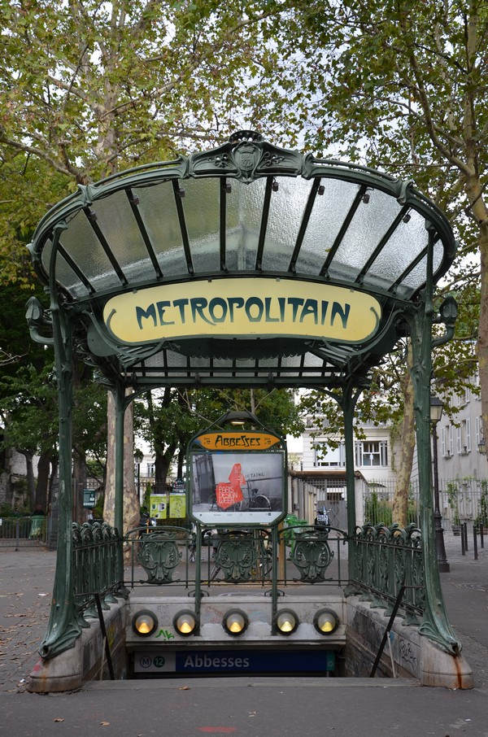
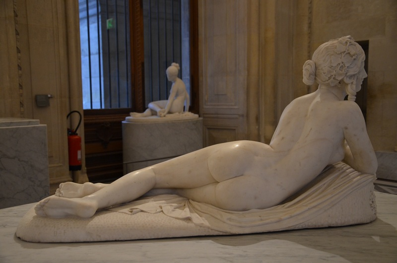
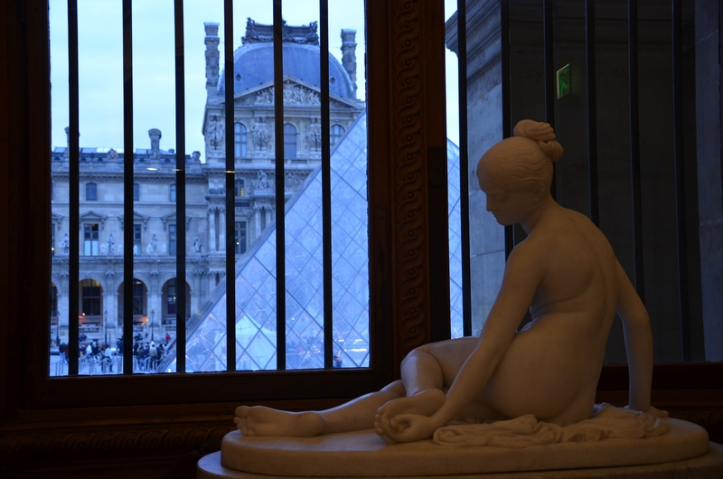
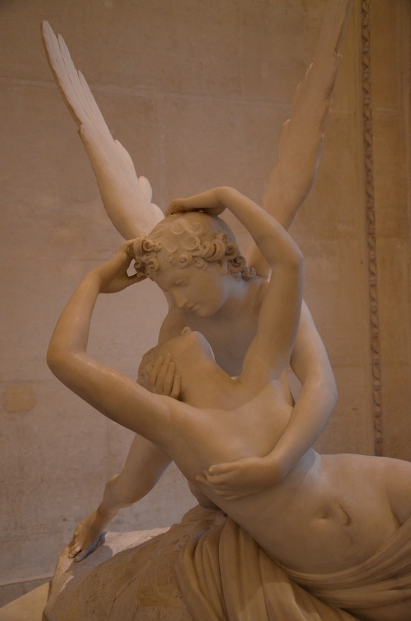
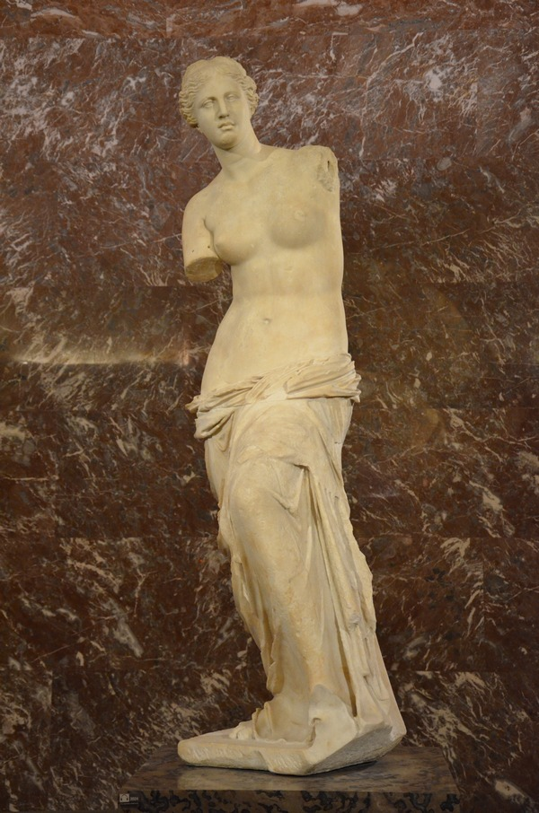
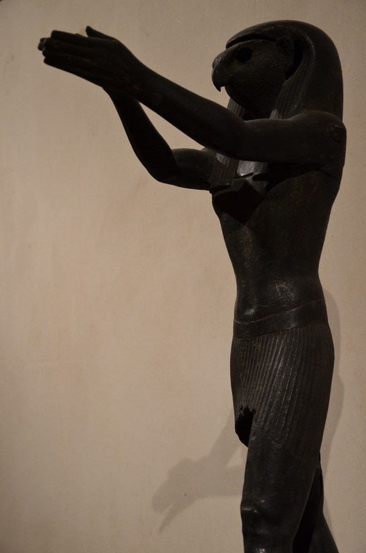
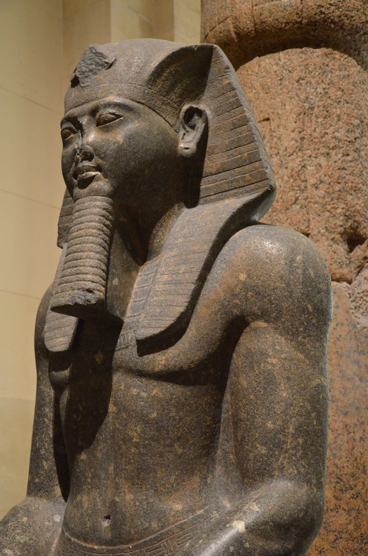
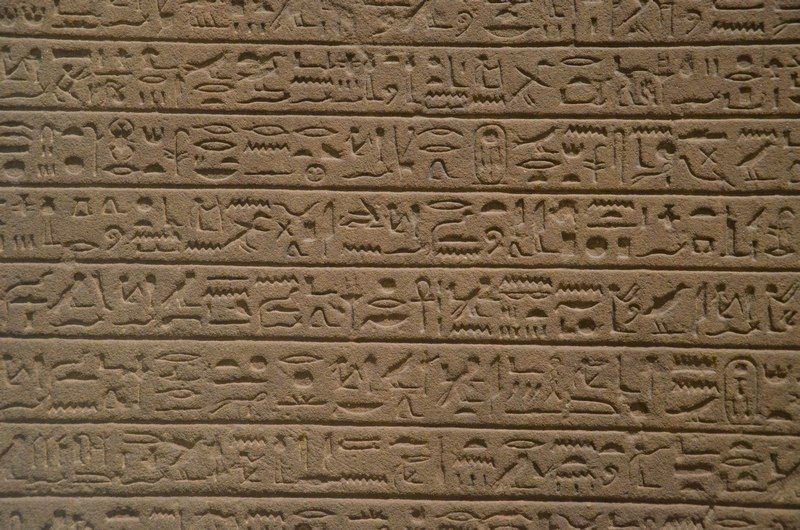
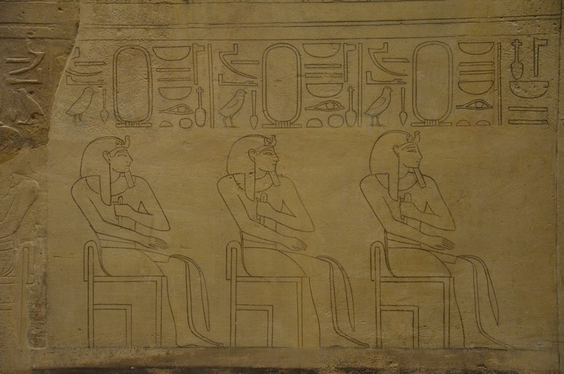

Ve středu navečer jsme vyrazili ještě jednou do Louvru, protože při naší poslední návštěvě jsme stihli sotva zlomek toho, co bychom rádi viděli. Vyjížděli jsme ze stanice metra Abbesses, která je proslulá svým slavným secesním vchodem. Krom toho se však tato zastávka může pyšnit další zajímavou kuriozitou. Na pařížském metru mě překvapilo, že vlastně není nijak zvlášť hluboko pod zemí. U této zastávky je to však jinak, protože je položena už poměrně vysoko a chcete-li se dostat dolů, čeká vás dlouhá cesta po točitém schodišti (eskalátory nečekejte 8-)). Dolů to jde ještě celkem lehce, ale v opačném směru je to skutečně jen pro fyzicky zdatné jedince. Pokud se mezi ně nepočítáte, máte ještě jednu možnost a tou je obrovský výtah, který pojme, pokud si dobře vzpomínám, takových 50 lidí. Je to docela nepříjemná tlačenice, ale nejspíš je to stále lepší, než šlapat pěšky :D…

Abbesses
Cestou do Louvru jsme se opět na chvíli zastavili v překrásných Tuilerijských zahradách a nastavili tvář ospalému slunci. Pařížské parky se mi strašně líbily - bylo příjemné vidět, že i tak hektické město se dokáže na chvíli zastavit a odpočívat. V každém parku je spousta míst k sezení, často jsme ale viděli Francouze válet se jen tak na zemi v trávě. Kolikrát to vypadalo, že si jen na chvíli odskočili z práce :D. Martova pole a park před Lucemburskými zahradami byly zase plné studentů (kteří zde evidentně hodně holdují marihuaně 8-)), ale také maminek s dětmi. Na parcích mi vadila jediná věc, o které už jsem se tady na blogu zmínila v jiné rubrice - a sice všudypřítomný písek a prach. Stačilo udělat pár kroků a měli jsme okamžitě příšerně špinavé a zaprášené boty - brzy jsem si na to zvykla a přestala to řešit, ale i tak jsem každý večer strávila pucováním :D
Pojďme ale konečně znovu do Louvru! Poučeni minulou zkušeností, dali jsme si tentokrát opravdu pozor na otevírací hodiny 8-). Nejprve jsme zamířili do prvního patra křídla Richelieu, kde se nacházejí honosné komnaty Napoleona III. Po této “zámecké” prohlídce, která byla (jak jinak) velmi rozsáhlá a únavná, jsme zatoužili po italských sochách, neboť jsme se tu do jedné minule zamilovali a oběma nám nedala spát :D. Protože Louvre je pravým bludištěm, nebyli jsme si úplně jistí, kde naši sochu hledat. Napřed jsme zabloudili do špatného patra křídla Denon, kde jsme si alespoň prohlédli italské a španělské sochy z 11.-15. století, povětšinou s křesťanskými motivy, a teprve pak jsme přišli na to, že musíme ještě o patro výš.


V této části jsme strávili hodně času a ten, který nám ještě zbýval, jsme pak věnovali křídlu Sully a dílům Antiky a starověkého Egypta, kde jsme naši návštěvu zakončili. V tu chvíli už jsme byli opravdu hodně unavení a téměř jsme necítili nohy. Stihli jsme ale vpodstatě všechno, co jsme si přáli vidět :-).

Kdo by si neplácnul :D?

Další italská krasavice

Psyche and Cupid

Milská Venuše

A dostáváme se do Egypta…

Socha Ramesse II.

Hieroglyfy

V tuhle chvíli už bychom si taky rádi sedli :D…
Mezitím už se venku setmělo, takže jsme konečně mohli pořídit i několik působivých nočních fotek osvíceného Louvru.


Závěr dne provázelo ještě několik kuriózních okamžiků. Cestou z muzea jsme se zastavili v Carrefouru na Pigalle pro něco k večeři a byli jsme docela šokovaní zjištěním, že po 9.hodině je zde zakázán prodej alkoholu :D. My tedy ten večer neměli v plánu pít, ale stejně nás to překvapilo - asi tak, jako návštěvní řád vyvěšený na hotelovém pokoji, který konzumaci alkoholu v hotelu rovněž zakazoval - na to jsme se jim ale samozřejmě další večer vykašlali 8-).
Musím říct, že přes den se mi Montmartre líbil víc. Jakmile se setmělo, začaly se tu trousit pochybné partičky a gangy sestávající především z černochů. Jak by řekl můj oblíbený filmový hrdina Bohuš - “Hoši nic ve zlém, já nésu žádné rasista - pro mě cigán jako černoch.” :D, ale klidu vám to nepřidá, zvlášť pokud takový gang potkáte zrovna ve slepé uličce, kde máte svůj hotel. Vyšší koncentraci partiček jsme nakonec přisoudili tomu, že hned za rohem se nacházelo několik klubů, před kterými se také hojně srocovaly.
Na hotelu nás čekalo poslední překvapení dne - na recepci tentokrát neseděla ta protivná ženská, co nás ubytovávala, ale sympatický mladý černoch. Zajímalo nás, jestli je tady na hotelu možnost snídaně. Při rezervaci jsme na nic takového nenarazili, ale při pročítání zkušeností na netu se o snídani cosi psalo, tak jsem se rozhodla, že se zeptám. Černoch pravil, že možnost snídaně tu je a zeptal se nás, jaký jsme pokoj a jestli jsme za ni platili. Usoudili jsme, že tím pádem máme smůlu, protože snídaně v ceně není, řekli jsme, že neplatili a chystali se jít do pokoje. Když v tom nás černoch překvapil. Spiklenecky na nás mrknul a pravil, že teda pšššt, ale zapíše nás do knihy, jako že jsme to zaplatili a zítra ráno si můžeme přijít sem dolů na snídani. Byli jsme dost překvapení a nevěděli jsme, jestli to myslí vážně nebo ne. Vypadalo to ale, že asi jo a navíc jsme viděli, že cosi do té knihy skutečně zapisuje. Dost jsme přemýšleli, jestli na tu snídani skutečně půjdeme a jestli to není nějaká léčka. Nakonec jsme šli :-). A o tom, jak to dopadlo, zase příště. (Hehe, dneska to teda končí fakt napínavě, co :D?)
Jako vždy se rozplývám nad fotkami, super :)
Zrovna v tomhle příspěvku jsem ti taky chtěla pochválit fotky. Už jsem se o nich bavila minulej týden s Blankou, která taky poctivě čte. Myslela, že máte nějakej fakt dobrej foťák, ale já myslela, že obyčenej. Fotíte na normální malej digitál nebo nějakej lepší?